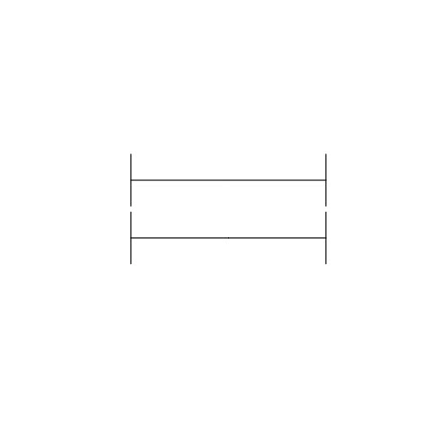
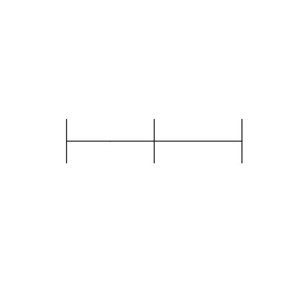
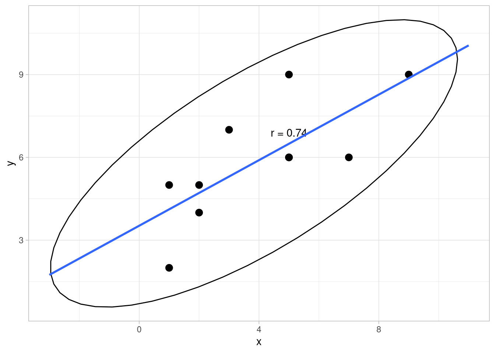
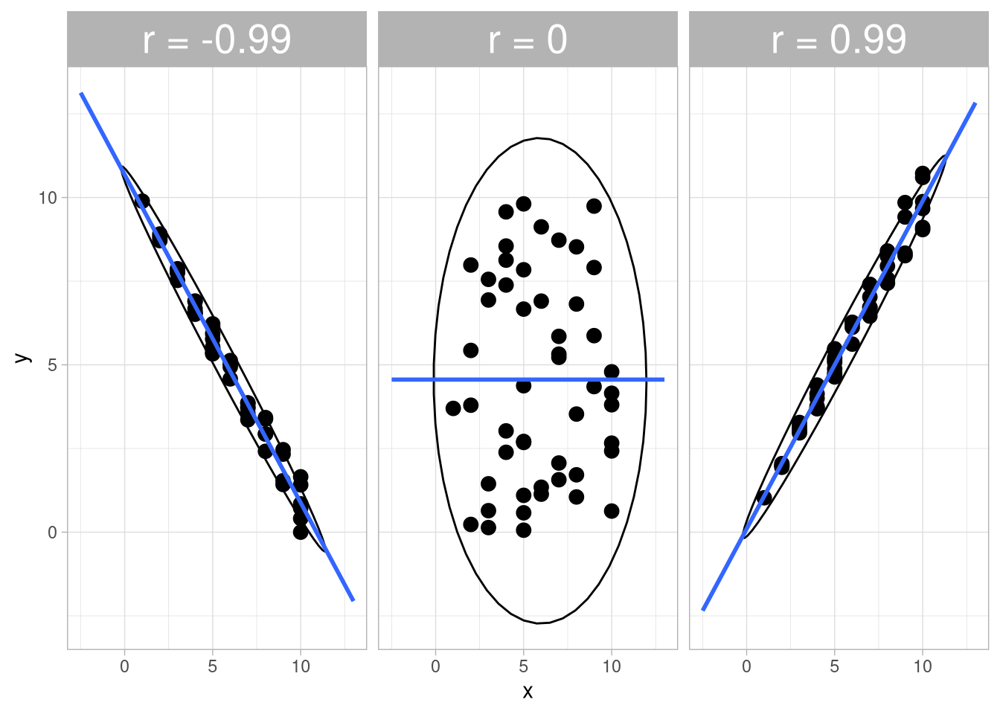
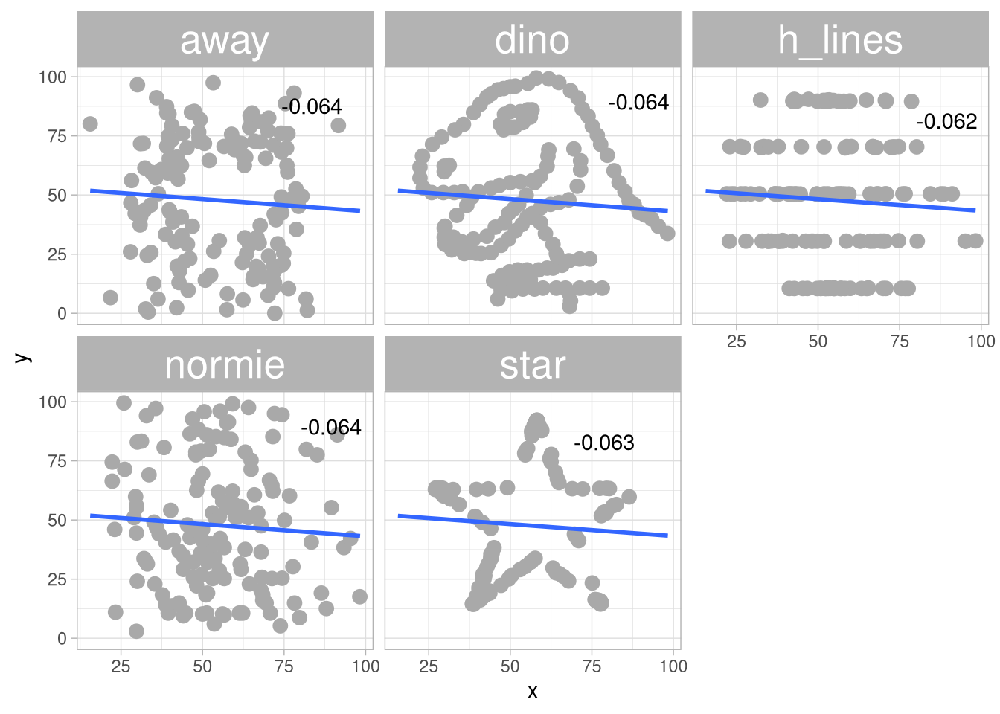
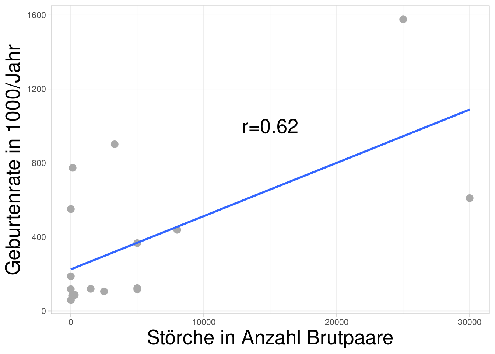

Warum wissenschaftliche Psychologie?
Organisatorisches
Prüfungsleistung
- Klausur
- 3-tägige Take-Home-Klausur
- Ausgabe am 22.2.21
- Prüfungsvorleistung
- Erstellung eines eigenen Versuchsplans, Darstellung in Form einer Hausarbeit
- Leseaufgaben und Bearbeitung der jeweiligen Fragen zum Kapitel im Olat
Semesterplan
| Sitzung | Datum | Sitzungstitel |
|---|---|---|
| 1 | 02.11.2020 | Warum wissenschaftliche Psychologie |
| 2 | 28.11.2020 29.11.2020 | Hypothesen und der Prozess der Hypothesenprüfung |
| 3 | 28.11.2020 29.11.2020 | Experimentelles Vorgehen |
| 4 | 28.11.2020 29.11.2020 | Literaturrecherche |
| 5 | 28.11.2020 29.11.2020 | Operationalisieren und Messen |
| 6 | 12.12.2020 13.12.2020 | Experimentelle Versuchspläne |
| 7 | 12.12.2020 13.12.2020 | Störvariablen im Experiment |
| 8 | 12.12.2020 13.12.2020 | Nicht-experimentelle Versuchspläne |
| 9 | 12.12.2020 13.12.2020 | Material und Stichprobe |
| 10 | 23.1.2021 24.1.2021 | Auswertung, Darstellung und Interpretation |
| 11 | 23.1.2021 24.1.2021 | Ethische Probleme im Versuch |
| 12 | 23.1.2021 24.1.2021 | Publikationsprozess |
| 13 | wird noch bekannt gegeben | Vorstellung der Gruppenarbeiten |
| 14 | wird noch bekannt gegeben | Klausurvorbereitung |
Alltagspsychologie und ihre Fehler
Was ist Psychologie?
Was meinen Sie? Was ist die Aufgabe der Psychologie?
Woher kommen solche Aussagen?
- ‘Bauchgefühl’
- ‘Erfahrungswerte’
- ‘gesundem Menschenverstand’
Oft sind diese Arten intuitiven Vorgehens vernünftig, weil sie ständiges Hinterfragen von Denken und Handeln verhindern, und häufig zu richtigen Entscheidungen führen. (Stichwort ökologische Rationalität)
Um zu verstehen, warum diese intuitiven Vorgehensweisen kein guter Standard für den Erkenntnisgewinn sind, wollen wir auf ein paar Stolpersteine in der Wahrnehmung, Beurteilung und dem Abrufen von Informationen eingehen, die unter Umständen zu Fehlurteilen führen können
Wahrnehmung von Informationen
Müller-Lyer-Effekt


selektive Aufmerksamkeit
Unter welchem Hütchen ist die Praline?
typische Wahrnehmungs-‘Fehler’:
‘Fehlwahrnehmungen’
selektive Aufmerksamkeit
Halo-Effekt: Tendenz faktisch unabhängige oder nur mäßig korrelierende Eigenschaften von Personen oder Sachen fälschlicherweise als zusammenhängend wahrzunehmen.
- z.B. die bessere schriftliche Benotung von Schülern ohne inhaltlichen Grund, wenn sie mit hoher Quantität mündliche Beteiligung gezeigt haben
Bestätigungsfehler: Tendenz Informationen so auszuwählen, zu ermitteln und zu interpretieren, dass diese die eigenen Erwartungen erfüllen.
- z.B. das Gefühl, wahrnehmen zu können, wenn man beobachtet wird
Erwartungseffekte Die Beeinflussung des Ergebnisses einer Situation durch die Erwartungen an diese. Dazu später mehr.
Beurteilung von Informationen
Umfrage auf LimeSurvey:
Abb. 1: Schätzfragen https://tinyurl.com/y7yyjltd
Schätzfrage
Wie lang ist der Nord-Ostsee-Kanal, was schätzen Sie? Der Nord-Ostsee-Kanal geht von Kiel an der Ostsee bis Brunsbüttel an der Nordsee. Der 1. Vorstand des Bayerischen Dachshundklubs, Herr Jürgen Bujanowski-Weber / frühere Ministerpräsident des Landes Schleswig-Holstein, Herr Peter Harry Carstensen , schätzte die Länge des Nord-Ostsee-Kanals auf 50 / 200 km.
Wie viele Länder liegen auf dem afrikanischen Kontinent, was schätzen Sie? Afrika ist einer der Kontinente der Erde. Seine Fläche von 30,2 Millionen km² entspricht etwa 22 % der gesamten Landfläche des Planeten, er hatte 2017 eine Bevölkerung von circa 1,3 Milliarden Menschen. Der ehemalige Präsident der Republik Südafrika, Nelson Mandela / Präsident der Vereinigten Staaten von Amerika, Donald Trump, schätzte die Anzahl der afrikanischen Länder auf 25 / 85.
Urteilsheuristiken
Anagramme
| SERWAS | \(\rightarrow\) | WASSER |
| TESSMY | \(\rightarrow\) | SYSTEM |
| HARTOX | \(\rightarrow\) | THORAX |
Anagramme
Um das zu lösen bräuchte ich:
- 0-15 Sek
- 16-30 Sek.
- 31-45 Sek.
- 46-60 Sek.
- mehr als eine Minute
Anagramme
| CAHENFI | \(\rightarrow\) | ??? |
Exkurs: Korrelation
Der Begriff Korrelation beschreibt einen Zusammenhang zweier oder mehrerer Merkmale.
In der Psychologie ist meistens die ‘Pearson-Korrelation’ gemeint. Diese stellt ein Maß für den linearen Zusammenhang zweier Variablen dar.
Pearson-Korrelation:


Dabei gibt es zwei Fallstricke:
Pearson-Korrelationen geben nur Aussage über lineare Zusammenhänge
Eine Korrelation zu finden, bedeutet nicht gleich einen Kausalzusammenhang gefunden zu haben
Linearzusammenhänge

Korrelation vs. Kausalität
Aber selbst wenn ein linearer Zusammenhang besteht, bedeutet der nicht unbedingt einen kausalen Zusammenhang:
Tabelle aus: Matthews, R. (2000). Storks deliver babies (p= 0.008). Teaching Statistics, 22(2), 36-38.
typische Beurteilungs-‘Fehler’
Ankerheuristik
Orientierung an Autoritäten
overconfidence/Selbstüberschätzung
Korrelation vs. Kausalität
Rekognitionsheuristik: Die Tendenz dazu, dazu zu neigen, bei einer Entscheidung zwischen zwei Alternativen diejenige als höher/größer/besser zu bewerten die einem bekannt vorkommt
- z.B.: San Diego vs. San Antonio
Abruf von Informationen
Umfrage auf LimeSurvey:
](imgs/Hindsight.png)
Abb. 2: Schätzfragen https://tinyurl.com/y8mebw22
Hindsightbias
Fazit
Auf verschiedenen Ebenen der intuitiven Informationsverarbeitungen können Fehler auftreten, die zu einem falschen Ergebnis führen.
Wir brauchen für unsere psychologische Arbeit also eine andere Methodik.
Wissenschaftliche Psychologie
Wissenschaftliche Methodik
Wissenschaftliche Psychologie in Abgrenzung zur Alltagspsychologie zeichnet sich dadurch aus, dass sie wissenschaftliche Methodik im Gegensatz zu intuitiven Schlüssen nutzt, um zu Erkenntnissen zu gelangen.
Aber was heißt ‘wissenschaftliche Methodik’ denn nun?
Wissenschaftliches Vorgehen im Allgemeinen
Ein paar von vielen wichtigen Begriffen in der Abgrenzung von wissenschaftlicher zu nicht-wissenschaftlicher Methodik:
- Theorien - Phänomene - Modelle
- Fragestellung - Hypothesen - Variablen
- Falsifikationsprinzip nach Popper
Für ein gemeinsames Verständnis vom Inhalt der Begriffe hier eine kurze Begriffserklärung:
Phänomen:
Eine wiederkehrende Beobachtung, deren genauere Untersuchung relevant erscheint.
Theorie:
Zusammenhängendes System von allgemeinen wissenschaftlichen Aussagen welches einen Teilbereich der Realität (das Phänomen) beschreibt und erklärt.
Modell:
Formale Struktur, oftmals eine Analogie, welche den Kern einer Theorie veranschaulicht und Ableitungen von Hypothesen erleichtern soll.
Fragestellung:
Eine interessant erscheinende, durch wissenschaftliche Methoden zu beantwortende Frage, die sich auf Implikationen der Theorie bezieht.
Hypothese:
Hypothesen sind aus präzise definierten Begriffen zusammengesetzte Behauptungen (Vorhersagen), die Erwartungen bezüglich bestimmter Ereignisse/Gegebenheiten in der Realität formulieren. Kurz gesagt eine vermutete Antwort auf eine bestimmte Fragestellung .
Variablen:
Variablen sind veränderliche Größen mit mindestens zwei Abstufungen, die Eigenschaften oder Merkmale darstellen. Dabei ist bei einer Person zu einem Zeitpunkt aber nur jeweils eine Ausprägung dieser vorhanden.
Beispiel Begrifflichkeiten:
Eine Blackbox, die Zahlen in andere Zahlen umwandelt. Dabei nutzt sie uns unbekannte Operationen.

Der Umstand, dass die Blackbox ein jeweils ein bestimmtes Resultat liefert wenn wir sie mit einem Input füttern, ist unser Phänomen:
Unsere Theorie zu dieser Beobachtung könnte sein, dass die Blackbox eine Multiplikation mit dem Input und einer anderen konstanten Zahl durchführt und dessen Ergebnis ausgibt.
Wenn wir diese Theorie jetzt als Formel aufstellen, erstellen wir ein mathematisches Modell zur Beschreibung unserer Theorie:
Um jetzt zu überprüfen, ob unsere Theorie zur Funktion der Blackbox stimmt, müssen wir eine Fragestellung formulieren, die wir beantworten wollen.
Beispielsweise:
Ist der Output der Blackbox immer das 10-fache des Inputs?
Diese Fragestellung können wir dann mit Hilfe von Hypothesen überprüfen, die wir an der Blackbox testen. Beispielsweise:
Bei Eingabe einer Zahl als Input in die Blackbox gibt diese als Output das 10-fache des Inputs zurück.
In diesem Fall sind der Input und der Output Variablen.
Was machen wir jetzt damit? \(\rightarrow\) Allgemeines Prinzip des Hypothesentestens
Wir überprüfen unsere Hypothese, indem wir die Blackbox mit verschiedenen Ausprägungen(in diesem Fall verschiedenen Zahlen) der Variable Input füttern und den Output betrachten.
Zurück zur Black Box:
Allgemeines Prinzip des Hypothesentestens
Wir konnten leider unsere Hypothese nicht bestätigen und müssen in diesem Fall auch unsere Theorie verwerfen.
Aber ist das jetzt wissenschaftlich?
Falsifikationsprinzip nach Popper
Karl Popper (Begründer des kritischen Rationalismus):
„Die Tätigkeit des wissenschaftlichen Forschens besteht darin, Sätze oder Systeme von Sätzen aufzustellen und systematisch zu überprüfen; in den empirischen Wissenschaften sind es insbesondere Hypothesen, Theoriensysteme, die aufgestellt und an der Erfahrung durch Beobachtung und Experiment überprüft werden“.
„Alle Aussagen einer empirischen Wissenschaft müssen – sofern sie unzutreffend sind – prinzipiell an der Erfahrung scheitern können“
Sehr kurze Zusammenfassung des Wissenschaftsverständnisses im kritischen Rationalismus:
Theorien/Aussagen können nicht verifiziert (bestätigt) werden
Theorien/Aussagen sind erst dann sinnvoll, wenn sie falsifiziert (widerlegt) werden können
Die Falsifikation muss durch Empirie(auf Erfahrungen beruhende Erkenntnis) geschehen und möglich sein
Eine Aussage bewehrt sich dadurch, dass sie Falsifikationsversuchen standhält
Falsifikationsprinzip in der Psychologie Unter dem Strich bedeutet das für eine ‘wissenschaftliche’ Psychologie nach Popper:
Theorien müssen falsifizierbar sein
Das Experiment soll dazu dienen Erfahrungen zur Bewehrung oder Falsifikation von Theorien zu gewinnen
Forschung ist wissenschaftlich, wenn sie über Aufstellen und experimentelles Testen von Hypothesen versucht, ihre prinzipiell falsifizierbaren Theorien zu überprüfen
Fazit
Die Gewinnung von Aussagen über intuitive Methoden ist fehleranfällig und kann irre führen
Um zu verlässlichen psychologischen Aussagen zu kommen braucht es also wissenschaftliche Methodik
Hypothesengeleitetes Vorgehen ist eine Methode, zu wissenschaftlichen, nicht allzu falschen Aussagen zu gelangen und zu versuchen, falsche Aussagen zu falsifizieren
Wie geht das in der Psychologie?
Nächste Sitzung
Nächste Woche werden wir uns damit beschäftigen, wie der Prozess der Hypothesenprüfung in der Psychologie abläuft.
Abb. 3: In Anlehnung an: Reiß, S. und Sarris, V. (2012). Experimentelle Psychologie. Von der Theorie zur Praxis.
Hausaufgaben
Lesen und Aufgaben im Olat dazu bearbeiten: Huber, Kapitel 1 - 4.2 (S. 15-98)
Außerdem bis zum nächsten Termin eine psychologische Fragestellung überlegen und im Olat eintragen.